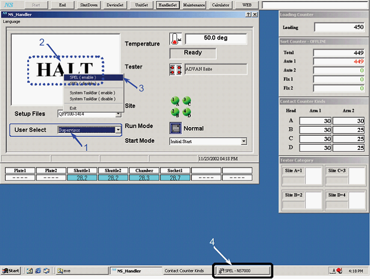
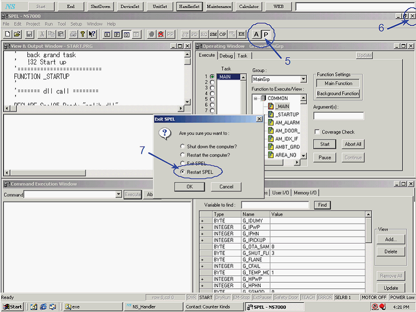
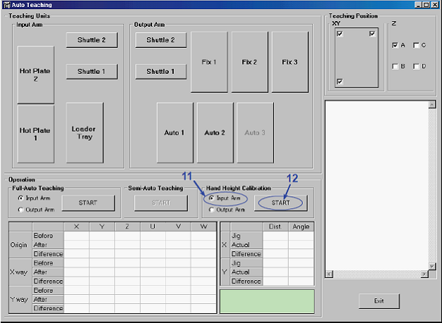
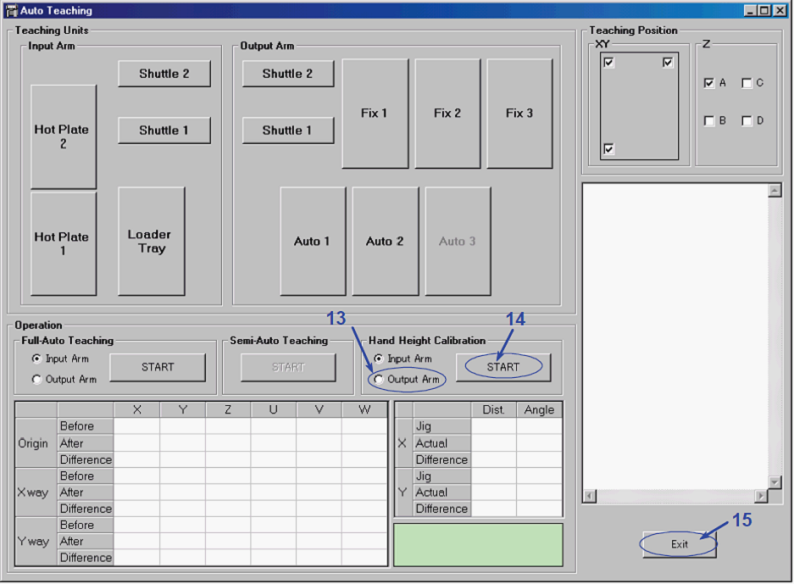
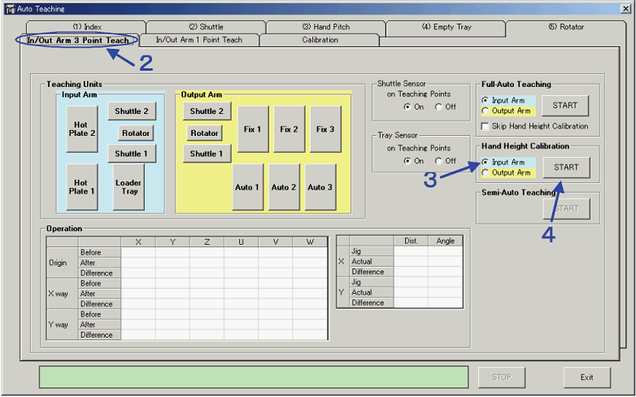
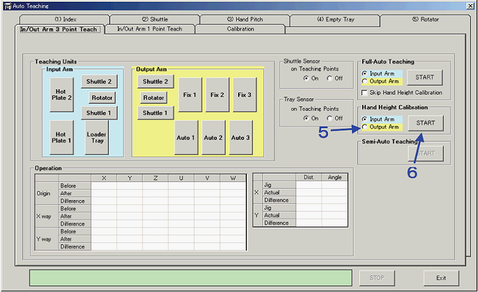

A8-2 How to adjust hand height of Input arm / Output arm ( 2 hands or 4 hands )
Input arm / Output arm hand height adjustment for NS-7000 / NS-8000
Input / Output Arm Hand Height Adjustment
The hand height of the Input Arm / Output Arm is adjusted by the auto teaching program using the hand height calibration of the Input Arm / Output Arm Z, U, V, and W axes.
NS7000 Auto Teaching
1. Select the "Supervisor" from the [User Select] box in the HMI main window.

2. Move the pointer of the mouse to the inside of the dotted line and double-click the left mouse button.
3. Select the "SPEL (enable)" from the list displayed by double-click.
4. The system task bar will be displayed at the bottom of the monitor. Click the <SPEL-NS7000> button to display the SPEL window in the AUTO Mode.

5. Click the <P> button and switch the program mode from AUTO MODE to PROGRAM MODE.
6. Click the <Close> button of the [SPEL-NS7000] dialog.
7. Select the <Restart SPEL> option button in the [Exit SPEL] dialog and click the <OK> button.
8. When SPEL is restarted, click the [Operating Window]-<Abort All> button.
9. Use the Windows explorer and start the following program. C:¥NS7000¥TOOL¥AUTO_TEACH.EXE
10. Show the [Auto Teaching] window.

11. Select the [Hand Height Calibration] group box-<Input Arm> option button.
12. Click the <START> button. Then, it starts the hand height calibration of the Input Arm Z, U, V, and W axes.

13. Select the [Hand Height Calibration] group box - <Output Arm> option button.
14. Click the <START> button. Then, it starts the hand height calibration of the Output Arm Z, U, V, and W axes.
15. After the height calibrations of the Input Hand and Output Hand are completed, click the <Exit> button to finish the auto teaching.
16. Finish SPEL and reboot MMI and SPEL.
17. Click the <P> button in the tool bar of the SPEL Auto Mode Window and switch to PROGRAMMING MODE.
18. Click the SPEL-[Operation Window]-<Abort All> button and stop the program.
< NOTE > Perform the hand height calibration to align the four hands height. If the vacuum pad dimension is wrong or the set screw for the vacuum pad is loose, accurate height calibration is impossible and troubles may occur.
NS8000 Auto Teaching
1. Refer to the procedure for NS-8000 and show [Auto Teaching] window.
2. Select the [In/Out Arm 3 Point Teach] tab.
3. Select the [Hand Height Calibration] group box-<Input Arm> button.
4. Click the <START> button in the [Hand Height Calibration] group box. Then, it starts the hand height calibration of the Input Arm Z, U, V, and W axes.

5. Select the [Hand Height Calibration] group box-<Output Arm> button.
6. Click the <START> button in the [Hand Height Calibration] group box. Then, it starts the hand height calibration of the Output Arm Z, U, V, and W axes.

7. Refer to the procedure for NS-8000 and finish the Auto Teaching.